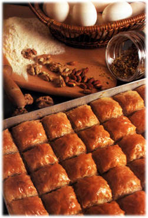
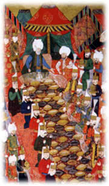
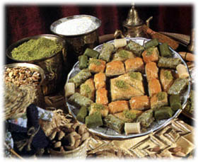
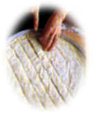
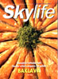

|
|
| baklavabaklavabaklavabaklavabaklavabaklavabaklava |
lavabaklavabaklavabaklavabaklavabaklavabak |
| baklavabaklavabaklavabaklavabaklavabaklavabaklava |
Of all Turkey's delicious sweet confections, the most famous is baklava. This exquisite flavoured pastry has been made in Anatolia for long centuries, and its ancestor may be a dish made by the Assyrians consisting of dried fruit sandwiched between two layers of pastry and baked in the oven. The earliest record of baklava as we know it today locates it in Damascus, from which city it spread to Gaziantep and from there to the rest of Turkey. Exactly when and how this happened is matter for debate. Nadir Gullu, head of the famous family firm of baklava makers, Gulluoglu, relates that his ancestor Haci Mehmet Gullu first tasted baklava in Damascus on his way to Mecca to perform the pilgrimage. He remained there for six months to learn how it was made, and introduced it to Gaziantep. The baklava of this city is made with even thinner layers of pastry, and filled with the fine quality pistachio nuts which grow in this region.
|
 |
By the 17th century at least the fame of baklava had spread to Istanbul, since towards the end of that century baklava was being made by the palace cooks as special treat for the janissaries in Ramadan. The janissaries carried the trays of baklava out of the palace in what was known as the Baklava Procession. During the reign of Sultan Suleyman the Magnificent (1520-1566), the soldiers had been given a large meal of pilaf, lamb stew and saffron flavoured rice pudding (zerde) before setting out on campaign, and in time, this tradition was replaced by the distribution of baklava during Ramazan.
|
|
| In the Istanbul Encyclopaedia,
historian Ilber Ortayli (he was my lecturer at the
university) gives this description of the Baklava
Procession:
|
|
| 'In the middle of Ramazan the sultan,
in his capacity as caliph, would pay a ceremonial visit
to the Mantle of the Prophet and the other holy relics,
which was followed by the Mantle of the Prophet
Procession. Following this ceremony trays of baklava
prepared in the palace kitchens, one for every ten
janissaries, cavalry soldiers, artillery men and
armourers, each wrapped in a cloth, were laid ready
outside the imperial kitchens. The first tray was taken
by the master armourer and his officers in the name of
the sultan, who was himself first janissary. After that
the others would be picked up in turn by pairs of
soldiers, and each unit with their officers would line up
for the parade, followed at the back by the soldiers
holding the trays of baklava. They would march out of the
palace gate and down the main road known as Divanyolu to
their barracks with great pomp and clamour, watched by
huge crowds. The following day the empty trays and cloths
would be returned to the palace'.
|
 |
| In later years the Baklava
Procession deteriorated into a noisy and disorganised
occasion, and the trays and cloths were no longer
returned, with excuses like 'the baklava was so tasty
that we ate the trays and cloths as well' :))) However,
despite its unprepossessing end, the procession was one
of the interesting customs of Istanbul in the past.
|
|
| In the first printed Turkish cookery
book, Melceu't-Tabbahin (Refuge of Cooks), its author
Mehmet Kamil gives five recipes for baklava: ordinary
baklava, baklava with clotted cream, decorative baklava
with clotted cream, baklava with melon, and rice baklava.
|
|
| Baklava has spread so far and wide
that today it is to be found and eaten with relish in
approximately one-fifth of the world's countries. It is
surprising, for example, to find that baklava is popular
in Texas, where it was introduced in the 19th century by
Czech migrants. Less surprising is its prevalence
throughout the Arabian Peninsula, North Africa, the
Turkic Republics of Central Asia, Greece, Albania,
Macedonia, India, Afghanistan and Armenia. However, there
is an important difference between the baklava made in
all these countries and that of Turkey: the thickness of
the pastry layers.
|
|
| In Turkey the sheets of pastry for
baklava are rolled out so thinly that when held up the
person standing behind can be seen as if through a net
curtain. Elsewhere a thicker pastry known as phyllo (a
Greek word meaning 'layer') of the type used in Turkey
for savoury layered pastries, is used for baklava, which
gives a coarser texture and flavour.
|
|
 |
For the initiated, eating baklava
has its own rules. Separating the top and lower layers,
or cutting through the lozenge shaped pieces with a knife
or fork is frowned upon. Instead you should first
leisurely survey the glorious sight of the baklava on
your plate, then spear a lozenge with your fork in such a
way that one-third of the piece is behind the fork and
the other two-thirds are facing you. This is so that the
lozenge does not break in two. The crunch made by the
fork as it penetrates the crisp layers is another
pleasure, which should not be allowed to pass unnoticed.
As you lift the piece to your mouth you should halt to
savour the fragrance, which should be dominated by the
wonderful aroma of cooked butter. Finally you pop it into
your mouth and the baklava experience is complete as the
flavour pervades your palate.
|
| If there is no crunch when your fork
and teeth penetrate the baklava, then it is stale. Well
made baklava should melt in the mouth, and should not be
excessively sweet or syrupy. And if you get heartburn
afterwards, then change your supplier, because that means
they are not using the finest quality ingredients.
|
|
| Although most people in Turkey buy
their baklava, it is not impossible to make at home if
you trust your skill at pastry rolling. So here is a
recipe to try at home: Ingredients- 8 cups of flour, 1 egg, 4 cups melted butter, 1/2 teaspoon salt, 3 cups ground pistachio nuts, 3 cups corn starch. For the syrup- 5 cups sugar, 5 cups water, 1/2 lemon juice.
|
 |
Method Mix the flour and salt together well, then add the egg and sufficient lukewarm water to produce dough that is soft but not sticky. Knead well until smooth, cover with a damp cloth and set aside for half an hour. Divide the dough into 30 equal pieces and form in to balls. Using a long narrow rolling pin and flouring with corn starch, roll out each into a circle 40-50 cm in diameter (the baking trays used for baklava are large, so yo u will have to adjust the quantities for a small tray). Butter the tray well and lay the first pastry circle inside. As you complete each circle of pastry, brush it well with butter and lay one on top of the other in the tray. Sprinkle the ground pistachio nuts on top of the 15th layer, and continue as before. Cut the baklava into lozenge shapes in the tray. Heat up the remaining melted butter until really hot and pour over the top of the baklava. Bake in a pre-heated medium oven for half an hour or until both top and bottom are golden in colour. Remove from the oven and set aside to cool. Meanwhile prepare the syrup. Bring the water and sugar to the boil, then add the lemon juice. Boil rapidly for a couple of minutes and remove from the heat. Pour the hot syrup over the baked baklava. When cooled serve with plain or clotted cream. |
| Resource: Skylife Magazine, Turkish Airlines |  |